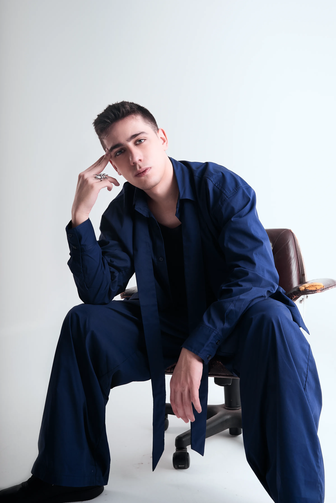
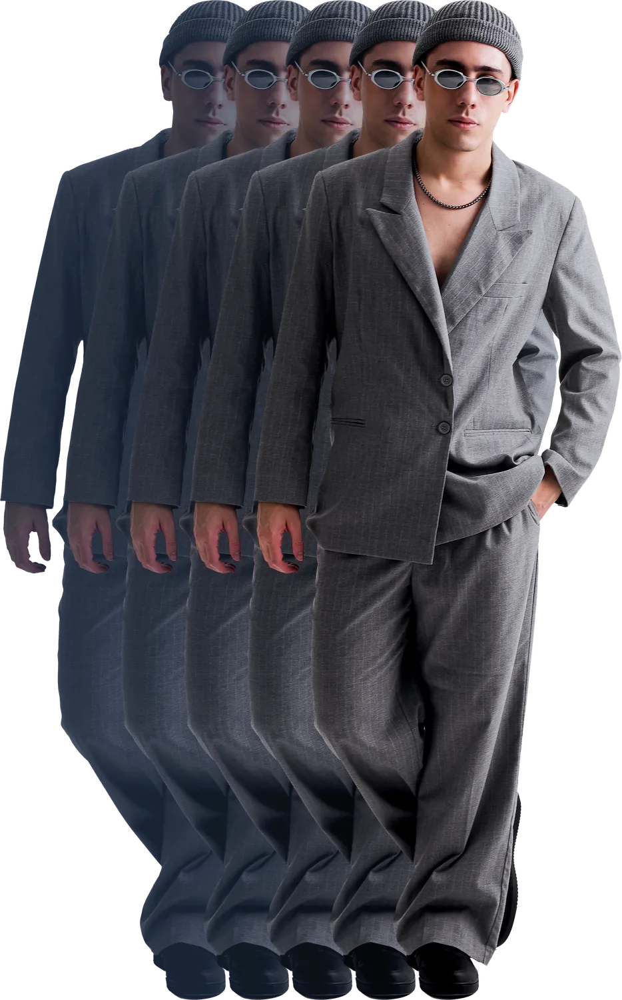

Mídia kit 2027
- Artista
- Silluz · Mateus Silluzio
- Gêneros
- Tech House · Deep House and everything in between
- Base
- Belo Horizonte, MG
Já tocou na House Sessions, No Signal BH, The Roof, Hit & Run e D.HAUZ.

Sobre mim
Mateus Silluzio encontrou na música eletrônica um idioma próprio. Começou a tocar ainda muito jovem, guiado por uma curiosidade natural por sons e texturas.
Com o tempo, esse impulso criativo o levou a produzir suas próprias faixas. Hoje, ele assina como Silluz, uma versão condensada de seu sobrenome que carrega em si o significado de luz, mas não qualquer luz: a que emana de dentro, discreta, precisa, enigmática.
Seu estilo é marcado por sets que transitam entre diferentes instrumentos, ritmos e camadas sonoras, sempre com uma construção sensível e sofisticada. Mesmo com uma presença mais introspectiva nos palcos, Silluz prende a atenção do público com um repertório que foge do óbvio e promete redefinir a cena.
Festas & pistas
Faixas autorais
